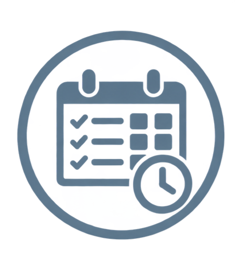
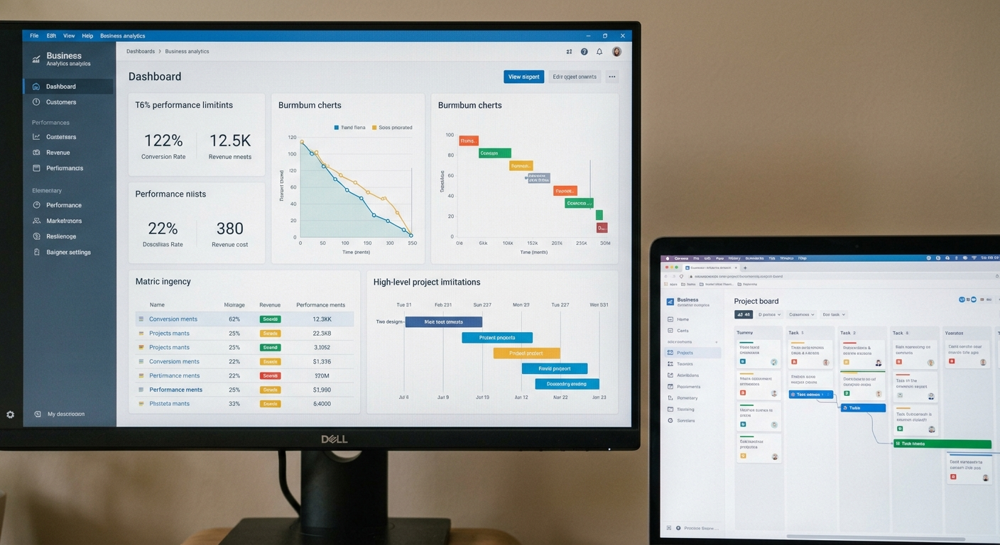
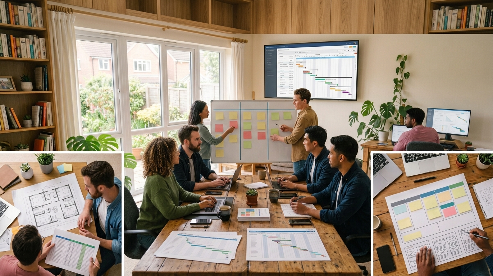

PSP & TSP
Mejora la forma de desarrollar software
El personal Software Process (PSP) y el Team Software Process (TSP) ayudan a maejorar la calidad, productividad y organización durante el desarrollo de software.


¿Qué es PSP?
El Personal Software Process (PSP) es una metodología que ayuda a los desarrolladores a planificar, medir y mejorar su forma de trabajar durante el desarrollo de software.

Planificación
Permite organizar las actividades, estimar el tiempo y establecer objetivos antes de comenzar el desarrollo.
leer masMedición
Ayuda a registrar el tiempo, el esfuerzo y los errores encontrados durante el desarrollo del software.
leer mas
Mejora continua
Permite analizar los resultados obtenidos para mejorar el proceso y trabajar de manera más eficiente.
leer masPlanificación
La planificación es el primer paso del desarrollo. Antes de escribir código, se define qué se va a construir, se estima el tamaño del trabajo y se calcula el tiempo necesario para terminarlo. En PSP cada desarrollador planifica su propio trabajo; en TSP el equipo completo se reúne para repartir tareas y acordar metas realistas. Planificar bien reduce retrasos y evita sorpresas.
Medición
Medir significa registrar datos reales durante el desarrollo: cuánto tiempo toma cada tarea, cuántas líneas de código se escriben y cuántos errores se encuentran. Estos números muestran el avance verdadero del proyecto y dejan comparar lo planeado con lo ocurrido. En PSP se mide la productividad individual, y en TSP el rendimiento de todo el equipo.
Mejora continua
Con los datos medidos se analizan los resultados para descubrir qué funcionó y qué se puede hacer mejor. Los errores frecuentes, las estimaciones equivocadas y los tiempos perdidos se convierten en ajustes para el siguiente proyecto. Así, cada ciclo de trabajo es más eficiente que el anterior, tanto para el desarrollador como para el equipo.
Team Software Process (TSP)
¿Qué es TSP?
El Team Software Process (TSP) es un proceso enfocado en organizar y mejorar el trabajo de los equipos encargados de desarrollar software.
TSP permite establecer objetivos, responsabilidades, planificación y mecanismos para controlar el avance y la calidad del proyecto.
Características
- Trabajo organizado en equipo.
- Roles y responsabilidades.
- Planificación colectiva.
- Seguimiento del proyecto.
- Control de calidad.
PSP vs TSP
PSP + TSP en la práctica
Trabajo individual
PSP ayuda a mejorar la forma de trabajar de cada desarrollador.

Medición y seguimiento
Permite registrar datos y medir el progreso del trabajo.
Trabajo en equipo
TSP organiza el trabajo y las responsabilidades del equipo.

Organización del equipo
Facilita la coordinación y el seguimiento del proyecto.
Ventajas y desventajas de PSP y TSP
Ventajas
Mayor productividad
Permiten organizar las actividades y utilizar mejor el tiempo disponible.
Mejor calidad
El registro de defectos permite identificar problemas durante el desarrollo.
Mejor planificación
Facilitan la estimación del tiempo y esfuerzo necesarios para un proyecto.
Trabajo organizado
TSP ayuda a establecer responsabilidades y coordinar mejor al equipo.
Desventajas
Requiere disciplina
Es necesario seguir el proceso y registrar información de manera constante.
Tiempo de aprendizaje
Los desarrolladores necesitan tiempo para aprender y aplicar correctamente el proceso.
Registro de datos
La recopilación de métricas puede aumentar el trabajo durante el desarrollo.
Adaptación del equipo
TSP necesita compromiso y coordinación entre todos los integrantes.